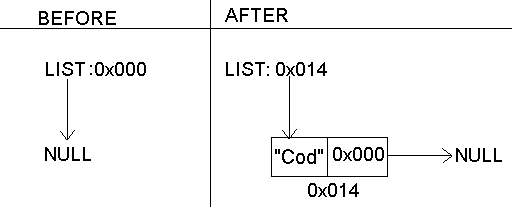

Suggestion: use Emacs
UNIX Reference
A First C Program
Let's get started with a very simple C program. This program will just output the string HelloWorld:
Start the editor, and enter the text as it is written above, but don't cut and paste. The goal here is to just get accustomed to the syntax.
Save the file as
HelloWorld.c
Now you need to compile it. A compiler
takes as input the source code, and
produces machine code, which the computer
can understand and execute.
The most common compiler is gcc
Try gcc --help.
To compile open a terminal and enter:
gcc HelloWorld.c
Once you have compiled the program the next step is to run it. Type:
a.out
If you are using gcc and you want to call the output executable something else then enter:
dkf5k@paisley
: /uf5/dkf5k/testsource ; gcc HelloWorld.c -o hello
dkf5k@paisley
: /uf5/dkf5k/testsource ; hello
Hello World!
After the -o flag enter whatever you want to call the executable file. Note that if you compile a different source file and give it the same name as an old executable the old executable will get overwritten.
a) Abort the program
b) Display text on the screen
c) Increment the accumulator register
d) Begin an infinite loop
You would probably guess that b) printf displays text on the screen. Knowing this you can add arbitrary text to your program. Try modifying the HelloWorld program so that it greets you. Make it print "Hello <your_name>".
Now look at the return 0;
statement. For now, all we need to know
is that return 0; exits the program. Here's an
experiment for you to try. Take your HelloWorld program, and transpose
the printf statements, and the return 0;
statements, so that the return 0; statement is first.
What do you think will happen? Try it and see. Then try putting
some printf statements before the return 0;
statement.
Let's look at this part of the source code:
int main()
{
}
main in our program. All C
programs must have some function specifically called main.
The main function is where execution starts.
Now let's turn our attention to the line:
/*My First C Program*/
Another use for comments is to temporarily stop blocks of code from being compiled. You might only want to test part of your program, and by "commenting out" the rest you can accomplish this, but you cannot nest comments.
The last lines of code that we haven't talked about are
the #include statements.
There is a file called stdlib.h
and the #include statement instructs the
preprocessor to take the contents of that file and insert
it directly into the file being compiled. Here is an experiment
for you to try: create a file and call it message.txt .
In the file put the following line:
Welcome to the C programming language.
Then create another file and call it test.c.
In the next section we will learn more about C's built in
types, and operators.
Types and Operations
int type.
There are four other basic types in the C Programming
Language:
char defined to be a single byte holding one character
int an integer
float a single precision floating point number
double a double precision floating point number
An int is simply a positive or negative
whole number. A float, or double is a number
with a decimal point like 3.14159 or 2.71828.
You can declare variables of a certain type like this:
int max = 50;
int a,b,c,d,e; /*declare five integer types*/
float PI = 3.14159;
double E = 2.71828;
char language = 'C'; /*declare and initialize two character types*/
The '=' sign is the
assignment operator. The line:
int max = 50;
means the variable max gets the value 50.
Notice we can either initialize the variable
when we declare it, or we may not.
What happens if
we use a variable that we have not initialized?
Try compiling and running
the following program:
%d indicates that the
bits associated with variable a should
be interpreted as an integer in printing.
What will this program output?
It should output the value 5 since variable a
was initialized with the value
5.
What would happen if we didn't initialize the variable?
dkf5k@paisley
: /uf5/dkf5k/testsource ; a.out
The value of variable a is -1073744252
Splint will tell you that something looks wrong. Let's see how this works.
If you are using Emacs, create a new file (say test.c )
and, copy the above source code into it if you haven't done
so already. Then type M-x compile (the
M-x should get you to the minibuffer then type
compile ). Now
type splint test.c . (you can
also use the compilation buffer with gcc doing
straight compilation)
If you are not using Emacs, your editor may have some similar
feature to Emacs compilation buffer. Check your edtior documentation.
You can always run Splint from the command line, by using
splint test.c , and the output should scroll on your terminal
window. (for this approach it would be best if you had a scrolling
terminal window).
You should get output like this:
(if Splint doesn't work, recheck the installation instructions )
Splint raised a "use before definition"
warning, and this is what we should expect. We are using
the variable a before it is defined. Typically in checking
a large source code file you would jump from warning to warning
comparing Splint's output to
the source code.
An rvalue is any
expression that can go on the right hand side of an assignment
statement. Numbers like 3, 5,
6, are valid rvalues as are variables like
Max, Min, or temp. Lvalues
on the other hand are valid expressions that can go on the left
hand side of an assignment statement. Literal numbers
would not be valid lvalues since you can
not assign a value to a literal number.
Other things to be aware of:
For a quick exercise determine which identifiers are valid, and which are not.
1stPlace
Float
minVertex
register
best-match
__maximum
First&Last
FirstBe4LLast
+,-,*,/ and the modulus
operator %. Usually you can use these just like you
would use a regular calculator but be aware of the following:
a % b
returns the remainder when a is divided by b. e.g. 10 % 3
will yield
1 because 10 divided by 3 equals 3 with a remainder of 1.
11 / 2 will not return the floating point
type 5.5 but will return the integer type
5. If you want the / operator to instead
performing floating point division then do the following: add a
decimal point to either of the two operands e.g. 11/2.0
. (you can also do this was a cast as we will see in
the example)
3 * 4 + 2 * 7 is
parenthesized as (3 * 4) + (2 * 7) .
4
instead of the output 4.66667 . This is because,
as we mentioned above, since both 3 and a + b + c
are integers the compiler performs integer division
instead of floating point division, and it truncated the result. This is not the same as rounding. The number
4.666667 rounded is 5 not 4. The
compiler is saying is that 14 / 3 is equal to 4 with a remainder
of 2.
Here is what Splint says about this program:
float avg = (a + b + c) / 3;
float avg = (a + b + c) / 3.0;
Here the compiler performs floating point division because at least one of the operands is a floating point.
< <= > >=
These operators function as expected
when applied to the numeric types int, float
and double . The expression 4 > 3 is true
while the expression 4 < 3 is false. In C:
false is the numeric value zero, and true is any numeric value other than zero.To test for equality or inequality use the relational equality or inequality operators, ==, and != respectively. These operators will always return 1 for a true statement and 0 for a false one. The logical operators are:
| Operator | Name |
|---|---|
&& | AND |
|| | OR |
! | NOT |
| A | B | A AND B |
|---|---|---|
| True | True | True |
| True | False | False |
| False | True | False |
| False | False | False |
The char type represents a character.
char character = 'z';
The following would print out the character:
In C an array holds a collection of the same type. The syntax
char alphabet[26] declares an array which holds
26 characters. The array is zero indexed so in this case
indices go from 0 to 25. We could write alphabet[0] = 'a'
or
alphabet[25] = 'z' to set characters in the array, and
char TheLetterM = alphabet[12] to get elements from the
array.
In C we usually think of a string as an array of characters.
Here is how to define and print out a string:
Notice that single quotes specify a character value, and double quotes specify a string of zero or more characters.
The character array TestString
is 12 bytes long rather than
11 because an extra character is used at the end
for the NULL character ('\0') to specify
the end of the string. As an exercise try changing
the above 12 to an 11, and then run Splint on the code,
and see what the output is.
Here are some character constants you can play with:
| Character Name | ASCII Name | Escape Sequence |
|---|---|---|
| newline | NL | \n |
| horizontal tab | HT | \t |
| vertical tab | VT | \v |
| backspace | BS | \b |
| form feed | FF | \f |
| alert or bell | BEL | \a |
| carriage return | CR | \r |
| blackslash | \ | \\ |
| single quote | ' | \' |
| dobule quote | "" | \" |
| question mark | ? | \? |
Try and write a program which rings the bell on the computer (character constant \a).
The next chapter focuses on control flow.
Control Flow
if statement is used to conditionally
execute pieces of code.
The following program will output Hello World!:
Only if the argument inside the parenthesis is true does it execute the block.
The else statement is very similar. The following piece
of code will output Goodbye!:
ifs.
This piece of code will output: "l'chaim!"
Guess what the following will output:
This program will output "Life is a highway".
Successive else if
statements are executed sequentialy, in the order they occur
in the file, and it executes the first that is true.
Let's write a simple program using if,
else, and else if which calculates
body mass index.
Body mass index is the ratio of a
person's weight in kilograms divided by the square
of their height in meters.
(in this example we use the #define
preprocessor instruction to define constants)
Trace through the execution of this program.
Is there anything missing?
One thing this program does not do is check if the input is valid. If someone entered a negative value for their height this program would execute without printing anything.
We could add:
else
{
printf("Error: Body Mass index less than 0");
}
elseifcomplete. Flags tell Splint
what kinds of checks to perform.
Look in
appendix B of the manual for more information on flags.
The last warning here is about
"incomplete elseif logic".
The other warning is about "dangerous" floating point comparision. Why is it dangerous to compare floating point types?
for and while)
Consider the following program which prints out the
squares from 1 through 5:
This program will work correctly, but there is a lot of redundancy.
We can remove the redundancy with a while statement.
The while statement tells the computer to "keep executing this body of code enclosed by the curly brackets while this condition is true". As soon as the condition is false, (as soon as i > 5) the program moves on to the next statement.
Without looping printing out the perfect
squares from 1 to 100 would require 100 separate
statements, but with a loop all we need to do is change the value in
the test condition (i <= 100).
We can use while loops in a variety of ways. For example, we could use it to write a program that finds the sum:
S = 1 + 2 + ... n
Like this:
i? Try
compiling and running the following
program:
The program will keep executing the same statement over and over again. If not stopped it will run forever. Control+c will kill the process.
Splint can provide warnings for likely infinite loops. Here is
Splint's output:
for statements
A for statement is very similar
to a while statement.
We could have used a for loop instead
of a while in our sum program:
It is just a while
loop with the initialization and iteration
step built in. The first statement in the
for loop:
i = 1;
initializes the index variable. The second statement:
i <= n;
tells program when it can exit the loop.
and the third statement:
i++
tells the program what to do once all the statements enclosed in curly brackets have been executed.
A for loop has these three components:
for(initilization; test; iteration)
{
body;
}
Try writing a few of these programs with loops:
Question: Is it possible to convert
any for loop to a while loop?
Scroll down for the answer.
Yes. Any while loop:
while (i < n
{
/* body */
}
can be converted into a for loop:
for;i < n;
{
/* body */
}
The semi-colons
at the beginning say "do nothing".
So it will execute this block of code as
long as i <= n. It is also possible
to convert any while loop to a for
loop:
for (i = 0; i < n; i++)
{
/* body */
}
as a while loop:
i = 0;
while( i < n)
{
/* body */
i++;
}
switch StatementConsider the following program:
The program will go through cases till one matches, and execute the code corresponding to that case.
For some practice with switch statements
write a short program which prompts the user
for a month number and outputs the number of days in that month.
For February the program could just output "it either has 28 days or 29", but a more sophisticated program would prompt for the year and determine how many days it actually has for that year. A leap year is any year which is a multiple of 4, but not of 100 unless it is also a multiple of 400, so 1984 is a leap year 1900 is not, but 2000 is.
You can only apply the switch statement
to discrete values like ints and chars
but not floats.
Notice how each list of possible cases
is followed by a break. Those
breaks are important.
Consider the output of this program:
It entered the first case
which evaluated to true, but then just kept executing or
"falling through" since it did not encounter a break
statement.
An error similar to this caused AT&T's entire network to go down in 1990.
Splint catches these kinds of mistakes:
Sometimes a fall through case might be what you want. Consider the following program:
By not including the break statement we "fall through" and
correctly report that 3,5,7 are both prime and odd (although
this program fails to identify 2 as a valid prime number).
Leaving out the break was intentional, but
Splint will still report a warning:
We need a way to tell Splint that we "meant" to fall through
and left the break out intentionally. We can do
this by adding an annotation
directly to the source code:
Now running Splint does not produce a warning:
By adding annotations to the code we can tell Splint what we are trying to do or what we expect to be true, and in this way Splint can do more thorough, efficient and accurate checking.
The operators = and == are often confused.
The = sign means assignment while the == sign tests for equality.
Consider the following code:
What is the output? Keep in mind that the '=' returns the value of the assignment, and that in C zero means false, and non-zero means true. Scroll down for the answer.
The output of this program is:
This is because the '=' operator returns a 0 which in C is false,
and so the else branch is taken.
Splint will catch this particular error:
Splint reports two warnings for this kind of error one because = was used
instead of == inside of the if and the other because the
expression inside the if is not boolean.
Similar to using the '=' for the '==' is the error of using the '==' for the '='. Consider the following program:
Determine what the output of this program will be, and suggest how to fix it.
Scroll down for the answer.
Here is the output of the program:
The statement:
max == array[i];
has absolutley no effect.
We would fix is just by changing it to:
max = array[i];
Splint will also catch this mistake:
Take a look at the following piece of code that finds the first number larger than 10 in a 3x3 matrix:
Is the output the following?
We found a number larger than 10!
matrix[1][1] is 17
Scroll down for the answer.
No. The output also includes 21:
The break statement only breaks out on the
innermost loop. For this program that is the loop which goes through a given row of the
matrix. A programmer may put a
break inside an outer loop without realizing it is breaking an inner loop instead.
Similar to the "fall through" case we can add an annotation telling Splint that we realize it is okay:
And now splint will not produce a warning:
In this chapter we introduce the C library functions for allocating and deallocating memory dynamically. Allocating memory dynamically can come in handy when it is not known how much memory the program will need. For example a database program may need to work both for a customer with 100 records and for one with 10,000 records.
We will also show you some of the common errors associated with dynamic memory allocation, and how Splint can help to avoid them.
In general there are two places memory can come from: the stack and the heap. Up to this point we have been allocating memory from the stack:
int main()
{
int IntegerArray[30];
}
This allocates enough space to hold 30 integers. The
int type is usually 4 bytes long, so
this would allocate 120 bytes of storage. Sometimes
allocating from the stack is all we need.
The bad thing about allocating things on the stack is that it may not be known at compile time how much space is needed.
By allocating memory from the heap we can:
malloc and free
The malloc() function dynamically allocates space
from the heap:
void *malloc(size_t number_of_bytes);
The void * is C's generic pointer type. You can cast the
return value of malloc to any actual pointer type you
like (even your own types that you define with struct)
So code like:
int *ip; ip = (int*) malloc(size * sizeof(*ip));will allocate enough space to hold
size number of
integers. sizeof is an operator which returns the number
of bytes needed to hold one instance of a particular type. In this case,
for most computers sizeof(*ip) will return 4 since on
most computers the integer type takes up 4 bytes.
Using sizeof is preferable to hard coding like this:
ip = (int*) malloc(size * 4);since using
sizeof makes the code more portable.
If there is no memory left on the computer then malloc
will return a NULL pointer. The NULL pointer
is guaranteed not to point at any object.
In general, whenever
a call to malloc is made the program should check
whether malloc returned NULL.
Probably the best way to do this would be to write a
function which takes one pointer argument, and if that pointer
is NULL prints out a suitable debugging message, and
exits the program. Alternatively, you could try and continue the
program without that block of memory.
Clearly you cannot just keep asking for memory, and always getting it. The computer has limited memory resources. If you don't need a piece of memory any more it would be nice to be able to return that piece of memory to the free store. Consider the following program:
If you run this program you will see that eventually
the computer does actually run out of memory, and
that malloc eventually returns NULL.
Splint will warn us about this program. More specifically, it will tell us that there is a a memory leak.
When i is 1 we let p point at a newly allocated block
of memory, but when i is 2 we let p
point at another
newly allocated block of memory. That first block of memory
is not reachable since there are no pointers to it.
Splint's output:
To fix it use free:
void free(void* ptr);
We pass to free a pointer to the block of memory to deallocate.
If a piece of memory is not deallocated by free before the
program ends then usually the operating system in terminating the process
deallocates it.
By using free we can fix our program so that
it doesn't have any memory leaks.
What's the problem with this program now? Scroll down when you know the answer.
Now the program runs in an infinite loop.
Here is splint's output:
Splint cannot detect that malloc
will never return NULL in this program
(there are limits to what static analysis can determine
only by looking at the source code).
On average Splint produces more false positives than false negatives, since a programmer can often determine quickly that Splint is producing a spurious warning, but an unreported warning could lead to a bug in the program.
(Note: This linked list implementation is based on that found in The Joy of C by Lawrence H. Miller, and Alexander E. Quilici.)
An advantage of a linked list over an array is that deleting or inserting elements in the middle of an array can be expensive since all the entries must be shifted. A linked list requires no shifting to insert or delete elements.
But a linked list has the disadvantage that it takes longer to retrieve an entry.
Here is the structure of a linked list:
Each node has two fields. One points to the other node in the list, and the other holds the relevant data (in this case a name).
Let's implement a linked list which holds employee records.
Since employees are always getting hired, and fired a linked list is an appropriate data structure for keeping the list in order by employee last name.
We will want to be able to insert to a list, delete from a list, print out the list, or find a employee record within the list. We start like this:
An emp_record has three data
fields corresponding to attributes of the employee,
and a next field which corresponds to the
next employee record in the list.
We will define an emp_list
to be a pointer to an emp_record.
And we will designate the empty list as
NULL:
emp_list my_list = emp_list_create();
NULL.
First, let's write prototypes for all our functions, since we want to insert, delete, find, and print we will need these four functions:
emp_list insert_record(emp_list lst, emp_record *e);
emp_list delete_record(emp_list lst, char* lastname);
emp_record* find_record(emp_list lst, char* lastname);
void print_list(emp_list lst);
In the case of inserting or deleting we need to return a
new list. Remember that C all parameters are passed by
value so neither of these functions can actually modify
their argument, lst. That's why they need
to return the new changed list:
my_list = delete_record(my_list, "Finkelstein");
Before starting on that we need to implement a simple function which copies one employee record into another:
We need to
do this because we are going to implement
insert_record by making
a copy of the record passed in.
Our approach for insert_record will be to
iterate through the list looking for
the first entry whose last name is alphabetically
after the last name of the inserted record.
There are two cases
one for inserting to the front of the list, and the other
for inserting in the middle or the end:
Here is a picture of what were doing if we insert "Cod" into an empty list:

And here is a picture of what we are doing if we insert "Cod" into a non-empty list:

We have three more functions to implement:
delete_record
find_record
print_list
find_record, and print_list
are both similar in that they involve interating through a list,
and performing some operations on each node.
Try and implement both of
those functions now. You can reuse the code which iterates
through the list from the insert_record function.
For now, just verify that it will compile.
After you have finished writing those try doing delete_record.
As before with insert_record there are two cases: deleting
the first node in the list, and deleting the middle or last node. All
that is changed is that now
instead of setting the next pointer of the previous node
to the inserted record just set it to next->next node,
so that the deleted node no longer has another node in the list
pointing at it. Remember to free the deleted node.
After you have written the functions try them out using this test bench.
To run the test bench you will need the
data file
to be
in the same directory as the program (be
careful about adding unneeded white space in the data
file)
Here is our implementation:
LinkedList.c
Splint can check unannotated programs for common types of memory errors. Specifically a memory leak and a dangling pointer.
In this case the memory block which ip
was pointing at is unaccessible after the assignment
ip = ig;
Since there is no way to access it there is no way
to free it. A small memory leak may be unnoticeable.
But if there is a function which gets executed over, and over
again, and for each execution there is a small memory leak, then
eventually the computer will run out of memory.
when we run Splint on this program we get:
So Splint lets us know about the problem.
Another type of error is called the "dangling pointer". The
problem occurs when a pointer is pointing at a piece of memory
that has already been freed. In this case, trying
to dereference that pointer will cause the program to crash.
Here is a simple example:
and what Splint has to say about it:
Let's use Splint to find errors in the linked list program. We'll start with what we had from the previous section:
Splint reports 32 warnings. Let's look at the first warning:
a->next is pointing at a piece of memory in
which case the line a->next = b->next would
be a memory leak.
However, a pre-condition of this function is that emp_record *a
is undefined (because we are overwriting its fields). We can tell
Splint that we are going to make this assumption, and leave it up
to the caller to prevent a possible memory leak. We can do this by adding
an /*@out@*/ annotation in copy_record telling
Splint that emp_record *a may be undefined:
Now splint reports 30 warnings (with this extra information an additional warning was also eliminated).
Now let's look as this warning:
Splint considers the possibility that malloc may have
returned NULL in line 61 in which case a NULL
pointer is getting passed to copy_record. We can fix
the code by adding an assert statement.
assert (new_record != NULL);
With the assert statement the program will abort if malloc
returns NULL.
There are two other places in the file which have unchecked calls to
malloc, lines 136, and 182. We fix these and get:
Now splint raises 27 warnings. Let's consider this warning:
fp is NULL because the call to fopen
could have returned NULL if the file wasn't in the directory.
We can fix this just like we fixed the malloc warnings, by
adding an assert statement.
Now Splint raises 26 warnings. Let's consider the warning:
Since we are not going to use the return value of this function we'll
just cast the result to void and this will eliminate the
warning:
This gives you an idea of what kinds of warnings Splint
produces, and how the correct response may be to
change the code, or add an annotation.
Some of the
warnings produced by Splint may be
spurious in which case
it is appropriate to use the /*@i@*/
annotation to suppress the checking of that line.
You can also suppress checking of a type of warning by unsetting the flag when running Splint. For more information check Appendix B of the users guide.